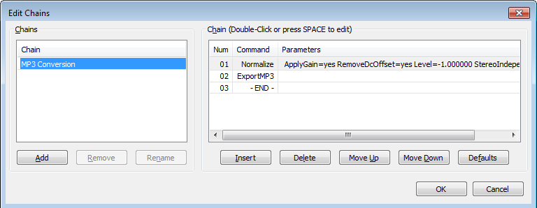

Edit Chains
From Audacity Manual
Chains may be applied to either the entirety of the current project or to a selection of files using the command.
It is possible to use Noise Reduction in Chains but see Noise Reduction Tips for how the Noise Profile is captured.
- Accessed by:
- 
Chains
Chains contains a list of already defined Chains. You can define the name of a new Chain and select which Chain is active.
- Add: Add a new Chain to the list.
- Remove: Remove the selected Chain from the list.
- Rename: Rename the selected Chain.
Chain
Chain lists the sequence of commands in order of first to last (End) for the Chain selected in the "Chains" box to left. Here you can add or remove commands for the selected Chain, change the order in which the commands execute in the Chain, or edit the parameters for some effects in the Chain.
- Delete: Delete the currently selected command from the list.
- Move Up: Move the currently selected command up in the list.
- Move Down: Move the currently selected command down in the list.
- Defaults: This button is only active when the "MP3 Conversion" Chain is selected in the "Chain" list on the left, and will reset this Chain to its default values.</ul>
Editing an existing command
To edit an existing command double-click it, or use the Up or Down keyboard arrow to select it then press SPACE. The "Select Command" dialog appears as below, but with the command name and any current parameters displayed and editable (using the button). If you want to replace the current command in its current order in the sequence with another command, double-click the new command (or select it then use SPACE) then choose .
Inserting a new command
To insert a new command in a Chain, left-click or use the Up or Down keyboard arrow to select an existing command; the new command to be inserted will be placed above this selected command. Then press .
- The "Select Command" dialog appears, listing all the available commands. Double-click a command from the list to insert it in the "Command" box, as shown in the image below after inserting "Normalize". Alternatively, use the Up or Down keyboard arrow to select the command, then press SPACE.
Note that the Sliding Time Scale/Pitch Shift effect is listed as TimeScale.
- If the command has editable parameters, the button will be active. Clicking this button will bring up the dialog box for the effect where you can set the parameters as if you were applying the standalone effect.
- Choose in the effect dialog to accept the parameters you entered, or to revert to the default parameters.
- Choose in the "Select Command" dialog to add the command to the Chain.
Export commands
- There are four basic export commands available: ExportWAV, ExportMP3, ExportFLAC and ExportOgg.
- The file name created by any of the four export commands consists of the date and time.
- The ExportMP3_56k_before and ExportMP3_56k_after commands can be used respectively to export "before" and "after" MP3 files at 56 kbps bit rate at any point in the chain of processing. This allows you to compare the result of one or more effects, or provide files for different purposes with and without a particular effect.
- The name of the MP3 exported by the "ExportMP3_56k_before" command is prefixed by "MasterBefore_" followed by the date and time. The name of the MP3 exported by the "ExportMP3_56k_after" command is prefixed by "MasterAfter_" followed by the date and time.

Parameters for export formats cannot be set in "Edit Chains". To configure export parameters for the Chain, click to access the Export Audio Dialog, click , set the parameters, press then the export. An audio track must be on screen in order to open the Export Audio Dialog. Sharing a chain
Each Chain is automatically saved as a separate text file with TXT extension in the "Chains" folder in Audacity's folder for application data. This allows you to copy a Chain and send it to another user. You can also add another user's Chain to your own list of Chains by copying it into this folder. An updated list of Chains will be available next time you open "Edit Chains" in Audacity.